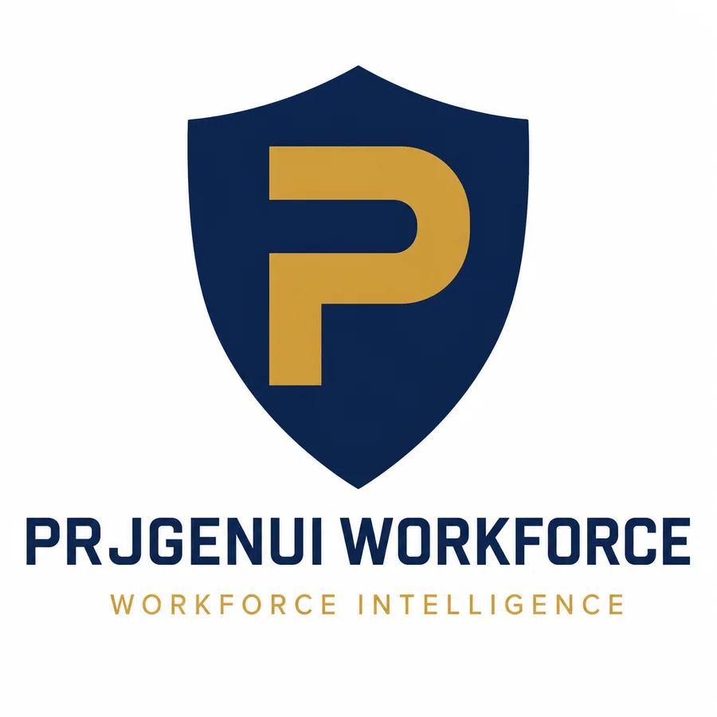
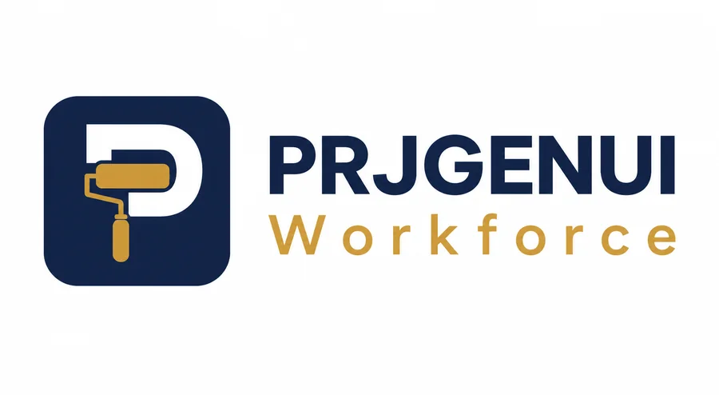
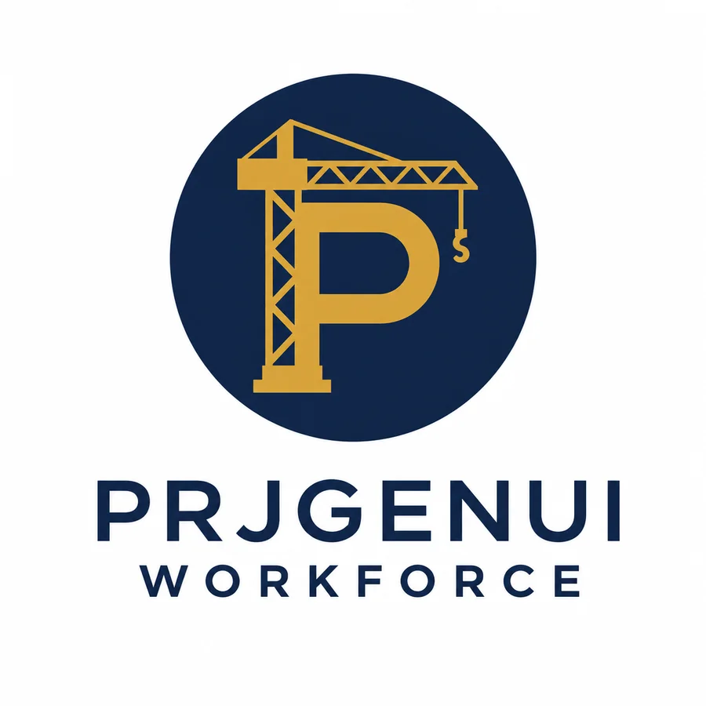
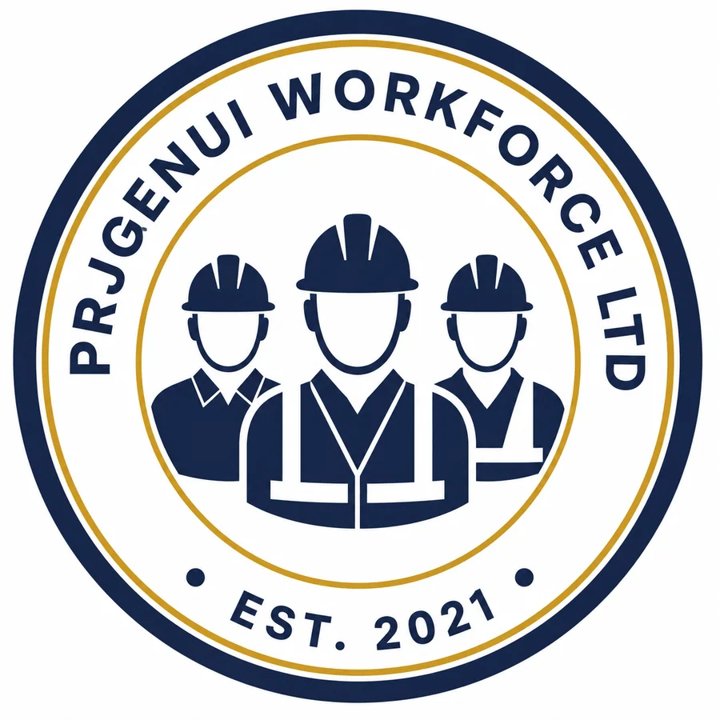
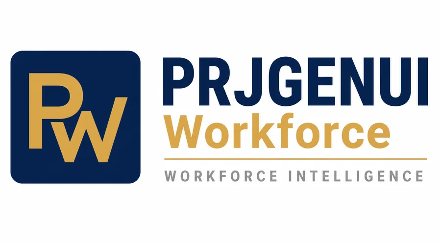
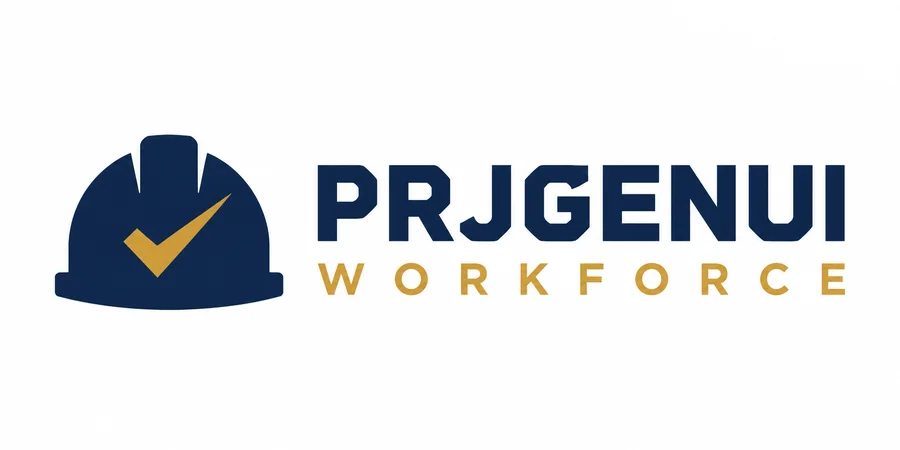

This page isn't part of the public website. It's just for you, and it should take about ten minutes.
All six use the website's navy and gold. They are concepts to choose a direction from. Whichever you pick gets redrawn as a clean vector file so it stays sharp everywhere, from the browser tab to the side of a van. Text, spacing and colour can all be adjusted.

A navy shield with a gold P, the company name underneath and the tagline in gold. Reads as protection and vetting, which is the business. The shield works on its own as an icon.
Open full size
The P is built around a paint roller, so the trade is in the mark itself. The wide layout suits a website header and letterhead. It is the most specific to painting and decorating, which is a strength now and a limit if you add other trades later.
Open full size
A tower crane forms the stem of the P inside a navy circle. Says construction broadly rather than one trade. The round layout suits social media profiles and the browser tab.
Open full size
A round seal with three workers in hard hats and hi-vis, the full company name around the edge and the founding year. The most established look of the six. It is also the busiest, so it needs room and the text gets small on a phone.
Open full size
A gold PW in a navy square, with the name alongside and the tagline in grey under a thin gold rule. The most corporate of the six. The monogram stands on its own at small sizes.
Open full size
A navy hard hat with a gold tick cut into it, next to the name in heavy capitals. The tick says checked and approved, which is the promise the website makes. The simplest of the six, so it stays sharp at any size and the hat works alone as an icon.
Open full sizeThere are no wrong answers. Short answers in your own words are the most useful, because the way you naturally describe the business is the tone the website should have.
Two or three sentences, the way you'd actually say it. Don't tidy it up.
If both, who comes first? That decides what a visitor sees at the top of the page.
And do you want the site to tell the story of how the business started on a live site, with your name on it?
The more specific the better. Real complaints make better copy than anything we could write.
Words, claims or a tone that doesn't feel like you. Also any words you'd rather we used or avoided, for example labour, operatives, crew, passport, Trust Score.
Pick the closest: a professional firm, a straight-talking site manager, or somewhere in between. If there is a company or website whose tone you like, in construction or not, tell us which.
The site currently says: a replacement search within 60 minutes of a no-show, cards checked with the bodies that issued them, and a reply within one business day. Keep, change or drop each one.
And which phone number and email address should the site show?